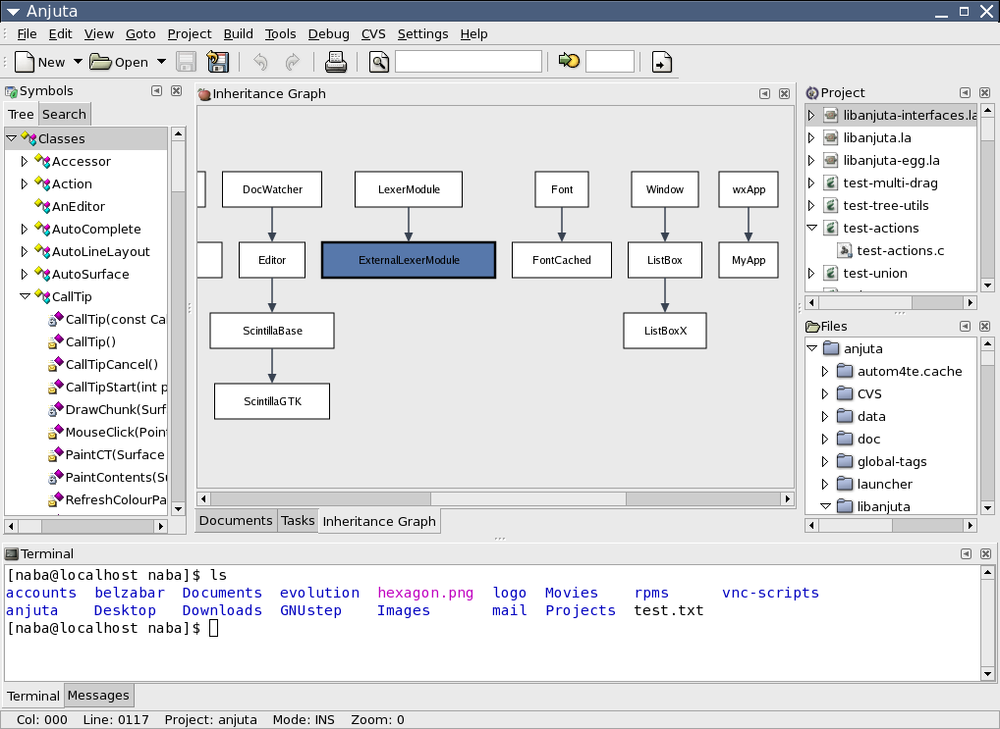

Se va a introducir el tema de los IDE de lenguajes de bloques como entornos de programación visual para aplicaciones móviles y se trabajará la programación orientada a eventos a través de la herramienta MIT App Inventor.
Esta herramienta permite a los desarrolladores crear aplicaciones móviles utilizando bloques visuales o lenguajes de programación de bloques.
Esta práctica se reparte en dos sesiones diferentes, así que no os preocupéis, ¡hay tiempo para todo y vamos a aprender un montón de cosas!
Entornos integrados de desarrollo
Un entorno de desarrollo integrado o entorno de desarrollo interactivo, en inglés integrated development environment (IDE), es una aplicación informática que proporciona servicios integrales para facilitar al desarrollador o programador el desarrollo de software.
Normalmente, un IDE consiste en un editor de código fuente, herramientas de construcción automáticas y un depurador. La mayoría de los IDE tienen auto-completado inteligente de código (IntelliSense). Algunos IDE contienen un compilador, un intérprete, o ambos, tales como NetBeans y Eclipse; otros no, tales como SharpDevelop y Lazarus.

Captura de pantalla de la interfaz del programa Anjuta. Anjuta(CC0)
El límite entre un IDE y otras partes del entorno de desarrollo de software más amplio, no está bien definido. Muchas veces, a los efectos de simplificar la construcción de la interfaz gráfica de usuario (GUI, por sus siglas en inglés), se integran un sistema controlador de versión y varias herramientas. Muchos IDE modernos también cuentan con un navegador de clases, un buscador de objetos y un diagrama de jerarquía de clases para su uso con el desarrollo de software orientado a objetos.
MIT App Inventor
App Inventor es un entorno de desarrollo de software actualmente mantenido por el MIT. Sirve para la elaboración de aplicaciones destinadas al sistema operativo Android.
El usuario puede, de forma visual y a partir de un conjunto de herramientas básicas, ir enlazando una serie de bloques para crear la aplicación.
El sistema es gratuito y se puede descargar fácilmente de la web. Las aplicaciones creadas con MIT App Inventor están limitadas por su simplicidad, aunque permiten cubrir un gran número de necesidades básicas en un dispositivo móvil. Los proyectos generados a través de esta herramienta se almacenan automáticamente en los servidores de App Inventor, permitiendo llevar en todo momento un seguimiento y control del trabajo.
App Inventor combina un acercamiento accesible (en términos de dificultad) a la programación con la capacidad de crear aplicaciones que tengan un impacto real. A este tipo de entornos se lo llama "de pisos bajos y techos altos". Para ello, libera a los usuarios de tener que memorizar la sintaxis y otras características del lenguaje, permitiendo que las personas se concentren en el cómo solucionar el problema más que en cómo escribir el programa.
App Inventor y los otros proyectos se basan en las teorías de aprendizaje construccionistas, que enfatizan que la programación puede ser un vehículo para involucrar ideas poderosas a través del aprendizaje activo.
Mira este video sobre AppInventor
En este vídeo veras cómo dar los primeros pasos con AppInventor. No te pongas nervioso si no entiendes algo, en clase lo vamos a explicar todo bien y podrás practicar lo aprendido. Además hay una parte 2 y 3 donde se explica literalmente la práctica que se va a desarrollar.
Práctica 3 - MIT App Inventor
Durante las mismas se realizará lo siguiente:
PARTE 1
1.- ¿Cómo iniciar un nuevo proyecto? 2.- ¿Cómo configurar el Screen 1? 3.- ¿Cómo crear un nuevo icono? 4.- ¿Cómo agregar y configurar un selector de lista, un switch, un campo de texto y un cliente Bluetooth? 5.- Ingresando al diagrama de bloques. 6.- Cómo Insertar un: "cuando selector de lista.antes" "Selector de lista.elementos" "Cliente Bluetooth, Direcciones y Nombres" "cuando selector de lista.despues" "Selector de lista.seleccion" "Cliente Bluetooth, Llamar - conectar - dirección" "Cuando Switch - cambiado" Una estructura "si - entonces"
PARTE 2
¿Cómo insertar un "comparador numérico"? ¿Cómo insertar un "Switch.on"? ¿Cómo insertar del menú de lógica un "cierto" o un "falso"? ¿Cómo enviar texto desde el Cliente Bluetooth? ¿Cómo insertar texto para enviar vía BT? ¿Cómo descargar el archivo .apk (instalador para Android)? ¿Cómo instalar el archivo .apk en el teléfono móvil?